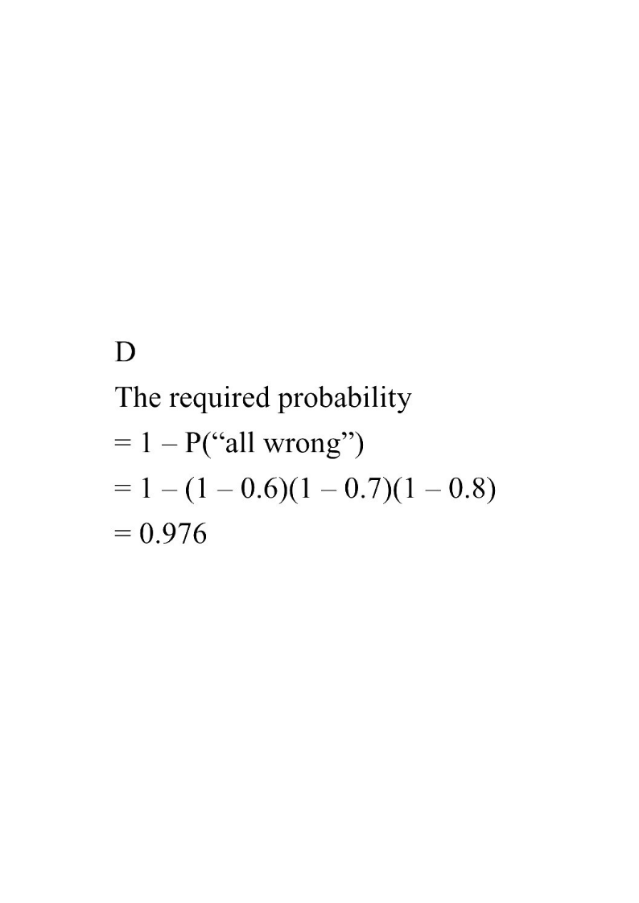

There are three questions in a test. The probabilities that a student answers the first question correctly, the second question correctly and the third question correctly are $0.6$, $0.7$ and $0.8$ respectively. Find the probability that the student answers at least $1$ question correctly in this test.

$$P(Q_1)=0.6,\qquad P(Q_2)=0.7,\qquad P(Q_3)=0.8$$ Since the three answers are independent, $$P(Q_1')=1-0.6=0.4,\quad P(Q_2')=1-0.7=0.3,\quad P(Q_3')=1-0.8=0.2.$$
Hint: “$Q_i'$” means answering question $i$ wrongly.Multiplying along the single branch “all wrong”: $$P(\text{all wrong})=P(Q_1')\times P(Q_2')\times P(Q_3')=0.4\times 0.3\times 0.2.$$
Hint: for “all wrong” only one path of the tree works,$$0.4\times 0.3=0.12,\qquad 0.12\times 0.2=0.024.$$ So $P(\text{all wrong})=0.024$.
Hint: this value is answer A — it is a trap!$$\text{Required probability}=1-P(\text{all wrong})=1-(1-0.6)(1-0.7)(1-0.8)$$ $$=1-0.024=0.976.$$
Hint: subtract from 1 — the answer must be larger than any single given probability.Question. Three archers shoot independently at a target. The probabilities that they hit it are \(0.5\), \(0.6\) and \(0.9\) respectively. Find the probability that at least one of them hits the target.